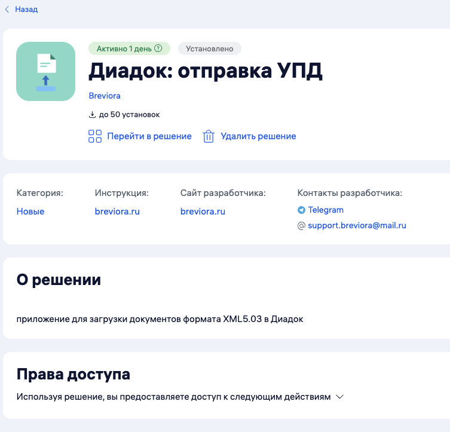
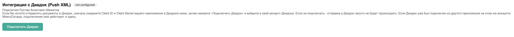
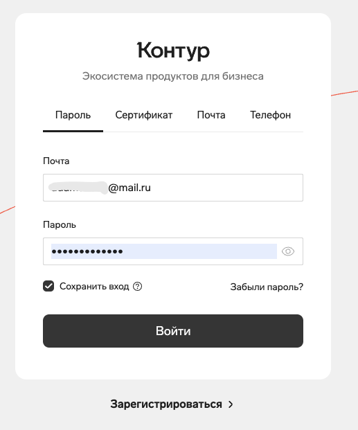
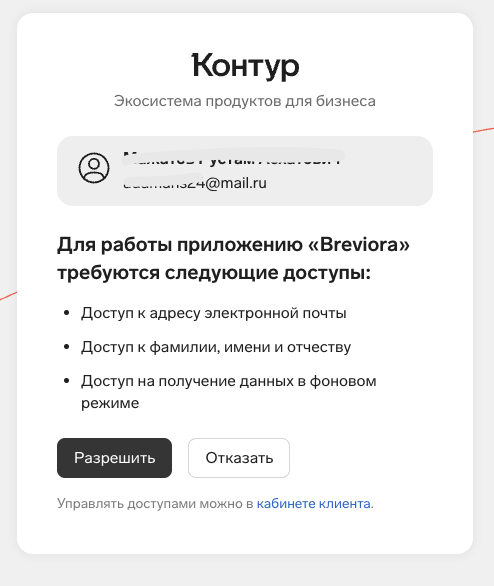
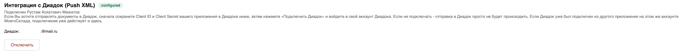
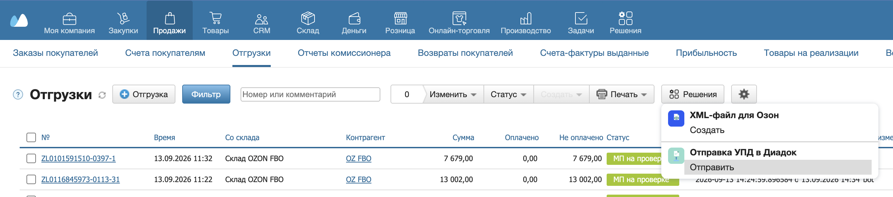
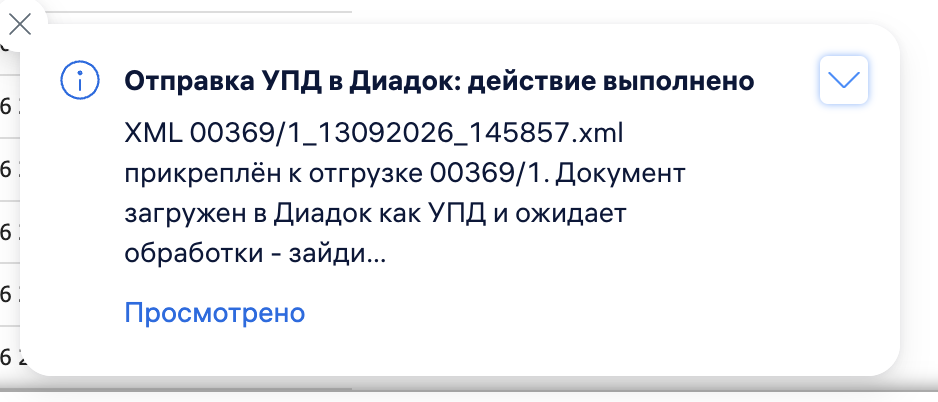
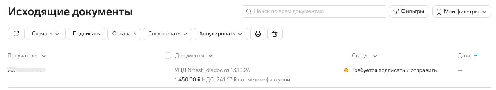
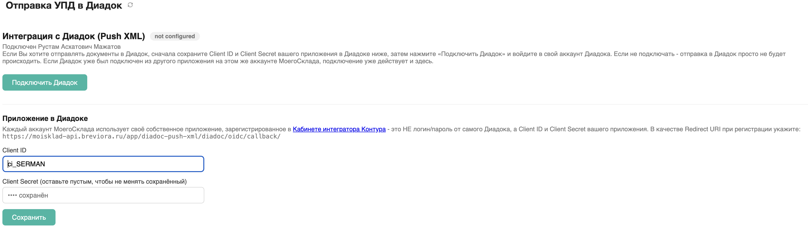

Диадок: отправка УПД
Кнопка на Отгрузке формирует стандартный УПД из документа МойСклад и отправляет его в Контур.Диадок как черновик на подпись.
1 Установите решение
Откройте раздел «Решения» в МойСклад, найдите «Диадок: отправка УПД» и нажмите «Установить».

2 Подключите Диадок
Откройте настройки решения — секция «Интеграция с Диадок (Push XML)» со статусом «not configured». Нажмите «Подключить Диадок». Без этого шага XML прикрепляется в МойСклад, но не уходит в Диадок. Если Диадок уже был подключен из другого приложения Breviora на том же аккаунте МойСклад, подключение уже действует — шаг можно пропустить.

Откроется страница входа Контур. Введите логин и пароль вашего аккаунта Диадока.

Контур запросит разрешение для приложения «Breviora»: доступ к e-mail, имени и данным для офлайн-доступа. Нажмите «Разрешить».

Вы вернётесь в настройки решения — статус сменится на «configured», а строка «Диадок:» покажет подключённый аккаунт. Подключение делается один раз.

3 Нажмите кнопку на Отгрузке
Перейдите в раздел «Продажи → Отгрузки», выберите нужную отгрузку и нажмите «Решения» → «Отправить». Решение сформирует УПД, прикрепит его к документу и отправит в Диадок.
Важно: у отгрузки должна быть создана исходящая счёт-фактура (в МойСклад — «Счёт-фактура выданный», создаётся из отгрузки). Номер и дата УПД берутся из неё; без счёт-фактуры отправка не выполнится — решение сообщит об этом.

4 Готово
Появится уведомление об отправке. В Диадок документ попадёт как черновик — подпишите и отправьте его контрагенту в веб-интерфейсе Диадока.


5 Как отключить Диадок
Если нужно отвязать аккаунт Диадока, откройте настройки решения и нажмите «Отключить» в разделе «Диадок». Решение при этом можно не удалять — кнопка на Отгрузке просто перестанет отправлять документы в Диадок, пока вы не подключитесь снова.
